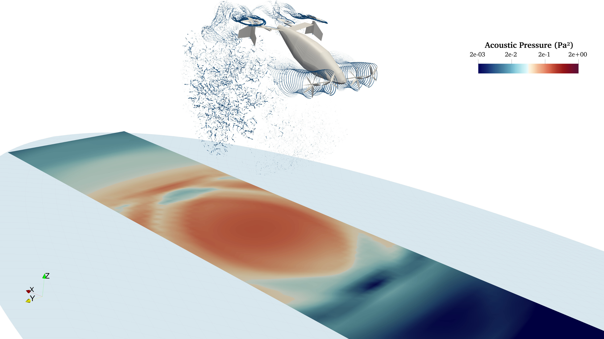

Flight, Optimization, and Wind Laboratory
© 2021. All rights reserved.
Flight, Optimization, and Wind Laboratory
© 2021. All rights reserved.
This multi-university-industry collaboration explores a comprehensive trade study of eVTOL configurations and develops an open-source multidisciplinary optimization framework for eVTOL design. Models span a variety of disciplines including aerodynamics, acoustics, batteries, thermo-elastic-electromagnetic motor design, structural sizing, and vehicle performance. Our lab is focused on steady and unsteady aerodynamic modeling, as well as optimization.
In this project, we aim to explore a novel approach for the simulation of wind farms located in urban areas or complex terrain. It is based on a hybrid vortex particle-mesh method that has the capability of performing large medium-fidelity simulations while benefiting from a fast, scalable implementation. We focus on extending the original method to incorporate the effect of the atmospheric boundary layer, and to model rigid objects (like buildings) and/or uneven grounds. Our objective is then to leverage this tool to supplement the development of engineering models suitable for wind farm layout optimization in complex environments.

While standard design tools typically relegate acoustic analysis outside of the design loop, we are developing a framework that embeds physics-based broadband and tonal analyses for optimization in conceptual design. It incorporates open source and in-house-developed propulsive design tools across aerodynamics, acoustics, powertrain, and structures disciplines for the design of ultra-quiet propulsors for sUAS, eCTOL, and eVTOL aircraft. The framework allows designers to perform thrust, power, and weight tradeoffs in vehicle integration, while identifying and minimizing any non-aero-induced sources of noise and vibration.
We’ve been developing a new formulation for a viscous vortex particle method (VPM) that is numerically stable. A VPM is based on solving the vorticity form of the Navier-Stokes equations, and, using a meshless Lagrangian scheme, can accurately preserve vortical structures and improve computational efficiency by placing particles only where needed. This makes the method ideally suited for modeling free wakes. This research is focused on fundamental developments in the VPM methodology and using it to better understand wind farm applications like mixed height wind farms, complex terrain, and partial waking.
This multi-university project aims to develop new techniques for the control co-design optimization of large scale floating wind turbines. We develop a framework to enable the simultaneous design of turbines and their control schemes, towards better global optima. Our lab is concerned with the heart of the multi-physics optimization problem, focusing on modeling aerodynamics. We work to leverage different gradient-based-enabled simulation tools (like BEM and RANS CFD) and to combine their outputs in a unique problem-solving approach.
Complex aerodynamic interactions from wakes interacting with wakes, and wakes interacting with lifting surfaces, are becoming more prevalent in emerging aircraft concepts. Over the last three years we have developed, verified, and validated a VPM. This project is coupling the VPM to an acoustics solver and exploring a challenging airborne wind energy application, modeled as a wing with 8 rotors flying in a circular path.

The design of wind farms involves complex tradeoffs with wake interactions, atmospheric behavior, blade loading and fatigue, turbine design, uncertainty in the wind resource, etc. We have been developing novel design approaches for wind farm design optimization, and coupled design problems involving layout, turbine design, and steady-state control.

Battery technology and autonomous control have advanced to a point where electric-powered passenger aircraft, with approximately 2–4 passengers (i.e., air taxis), are becoming feasible. Electric motors scale very differently than gas turbine engines, and have very different power curves, allowing for things like short or even vertical takeoff and landing, and distributed propulsion (many small propellers instead of a few big propellers). Distributed propulsion systems can allow for greater redundancy, control authority, performance, and maneuverability. However, operating many rotors in close proximity, or spread around the vehicle, creates strong aerodynamic interactions that are not well understood. We are developing an analysis and design methodology based on a vortex particle method to more accurately capture wake interactions and perform novel design studies for air taxi applications. Using electric motors affects all systems and thus completely changes the way the aircraft is designed. We are exploring optimization-driven design studies to improve design strategies for electric powered aircraft.
Many UAS missions have competing objectives and those missions may be supported by different types of aircraft. For example, consider a public service unit that needs to simultaneously monitor a wildfire, track a moving suspect, and search for a lost hiker. We are working on methods to optimally fulfill multiple objectives, that are dynamic (e.g., priorities and tasks may change), and utilize a heterogenous fleet (e.g., fixed wing and rotorcraft).
Aircraft can be used to provide internet in developing areas of the world at a lower cost than deploying new satellites. The challenge is that such aircraft need to be persistent (i.e., stay airborne for months at a time). This drives the aircraft design to very large wing spans in order to reduce lift-dependent drag, and to very high altitudes where wind speeds are low. The performance requirements are demanding necessitating a multidisciplinary design optimization approach considering tradeoffs in aerodynamic performance, structural dynamics, weight, solar energy capture, battery storage, electric propulsion, and cost. We are developing design tools and methodologies, and working on different aircraft design concepts and strategies to help make telecommunication access available in more parts of the world.

Related to the above project, ultra-efficient wings that are simultaneously lightweight and large in span, are highly flexible and create unique unsteady aerodynamic and structural dynamic challenges. We are working on high-fidelity approaches to analyze and design such configurations. These challenges are applicable not only to flexible aircraft wings, but also to wind turbine blades and other aeroelastic applications.
Characterizing the performance of complex vertical axis wind turbine shapes cannot be done with textbook analysis methods. We are investigating the performance of novel VAWT designs using a combination of wind tunnel testing with a custom-built torque sensor, and 3-dimensional unsteady RANS simulations.
Effective wind farm optimization involves a large number of design variables and contains many sources of uncertainty (e.g., wind direction, wind speed, turbulence levels, wake model parameters, etc.). We are developing methodology for large-scale optimization under uncertainty with applications in improving the robustness of wind farm energy capture.

Vertical axis wind turbines (VAWTs) are a promising technology for offshore applications and in the built environment. Performance of wind farms is highly dependent on effective integration, and this research is focused on developing engineering wake models for VAWTs to enable farm optimization.
Efficient wind farm layout design is a significant challenge, and today’s wind farms underperform energy capture expectations by around 10-20%. We seek to efficiently combine turbine, layout, and controls optimization in an integrated manner.